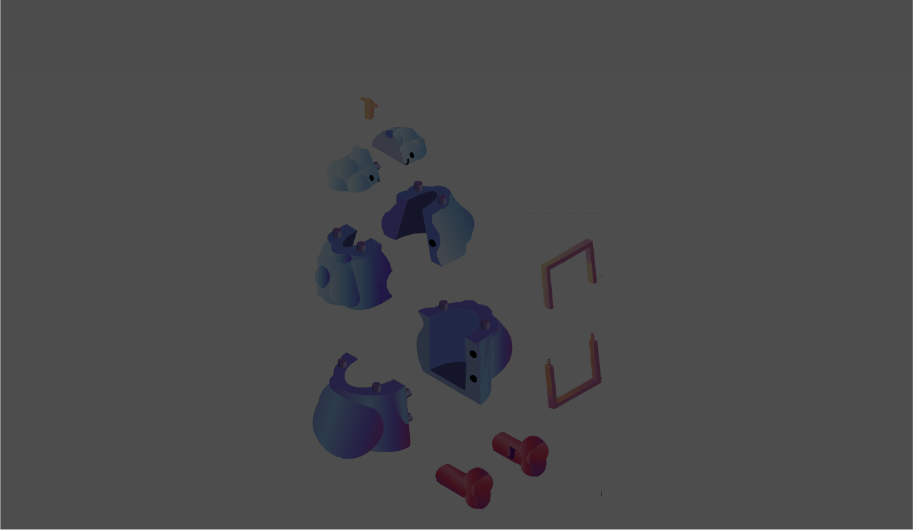

Proyectos
Publicidad de Jugo
Septiembre 2024
Se modelo y se imprimió en 3d un juguete que iba a estar dentro de un Huevo Kinder Maxi. El proceso de diseño abarcó desde la conceptualización, el público objetivo, los bocetos, el modelado, hasta la elaboración de un instructivo para su ensamblaje, junto a diversas imágenes que complementarían el juguete.
Hecho por:
Fernanda Muciño
Abigail Luna